Rebuilding Betrayal at Krondor (1993) as readable C that runs in the browser, one piece at a
time. Newest first. Every claim about the original is checked against the real game running in DOSBox.
Reading the signs
Oct 13, 2026
Clicking a signpost now reads it. Like bodies and chests, a sign is a "container" keyed by its position
in the world, and its text is a dialog key in one of the container's optional blocks. Signs weren't
in the save, though. The original looks in two places: first the save, then a file called
OBJFIXED.DAT, which has the same format and holds the things that never change (signs, graves and
such). A directory in the save gives each zone's starting offset in both. The C version now does the
same, which also opens the door to graves, piles and the rest.
To test it, I needed the original standing in front of the same sign. I loaded the chapter 1 start in
DOSBox, wrote a camera position and heading straight into memory, and took one step so the game caught
up. That gave the same view in both. The comparison showed one more detail: the original moves the
text box onto the clicked object and grows it out of that point over a few frames. We were drawing it
at the top of the view.
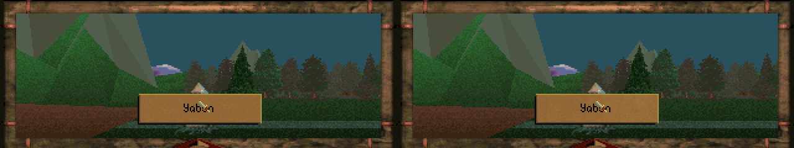
The Yabon sign, original (left) and C (right). The box sits in the same place. The
parchment texture inside starts at a random offset in both, so it never matches exactly.
Things that wear off
Oct 13, 2026
A lit torch, a light spell or a spell like Scent of Sarig lasts a while and then runs out. The original
tracks all of these in one small table: up to 20 records of {type, which one, seconds left}, saved with
the game. Every time the clock moves, each record is counted down and told how long it has left. A light
record sets the torch's glow (fainter in its last minutes). A spell record keeps a bit set in a "spells
in effect" word, which combat already reads for sneaking. Two more kinds set or clear a story flag when
their time is up.
Torches use it now. Double-click one in the inventory and it's lit for the hours its item data says.
The world takes on a warm tint at night, using the palette code from the nightfall post. When the time
runs out the torch burns down and one is used up. Using a lit torch puts it out (which also uses it up,
as in the original). None of my test saves has a torch, so I added two test options: --give
puts an item in the first member's pack, and --use uses it, once the main view starts.
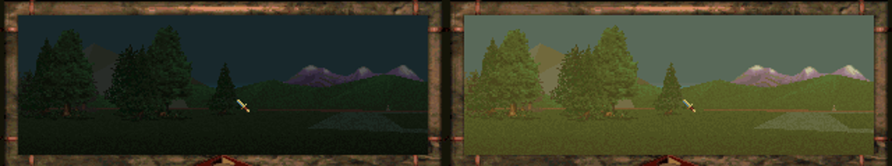
Both C: "steve" at 19:12 without a torch (left) and with one just lit (right). The torch
lifts the light to full and blends everything towards its warm colour. I haven't compared this with
the original yet, because it would need a torch there too.
Making camp
Oct 13, 2026
With time passing, camping was next. The campfire button opens a screen that replaces the 3D view
with a day-and-night dial of 24 hour markers. It also lists each member's health and stamina and how
many rations they carry. Click an hour and the party sleeps until then, while a highlight sweeps around
the dial a quarter of an hour at a time. "Until healed" keeps going until everyone is back to 80%.
Under the hood, each hour is one call to the time routine from the last post, with resting turned
on. So the party eats once a day, conditions run their course and health returns, but only up to 80%:
the original's hourly healing caps a full night's rest there. After twelve hours of sleep any sickness
is gone. You can't camp with monsters standing nearby. In daytime the dial even casts a sundial shadow
(a triangle, darkened through a table that maps each colour to the closest one ten steps darker).
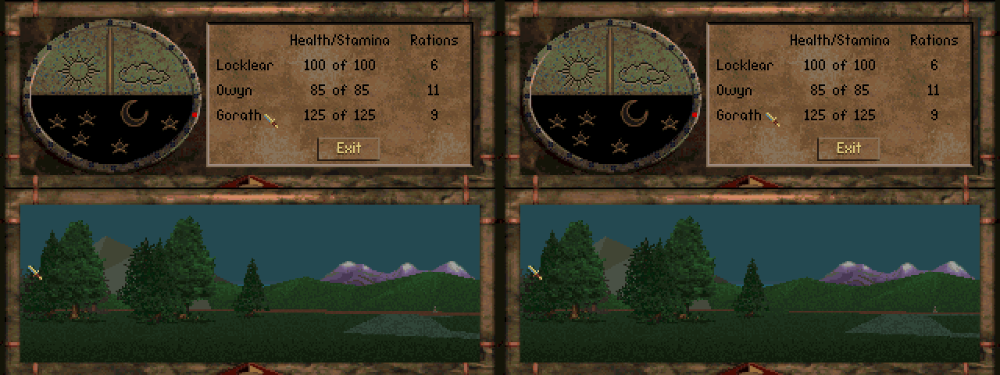
Top: the camp screen at 19:12, the original (left) and the C version (right). They differ
only in the mouse pointer. Bottom: after camping until 7:00, the original's clock moved exactly 12
hours. Both views are lit for the morning and differ only in a few polygon edges.
The ground shimmers on purpose
Oct 13, 2026
Once the trees matched, the walking comparison still had the whole grassy ground speckled red, though
it had matched right after loading the game. The pattern wasn't shifted by any amount I could find. The
original's pattern-fill code explained it: every pattern (grass, hillsides, the ground band) starts at a
fixed place in the texture page plus a value at DGROUP:0434. That value is set to rand() & 15
after every step and every turn. So each time you move, all the ground textures jump by a random few
bytes. It's a cheap way to make the ground feel like it's passing by.
The C version does the same now. For the comparison I read the original's value after the sixth step
(12) and forced the C version to use it through a new test option (--jitter). With that, the
frames differ in only 603 pixels: a few polygon edges and the mouse pointer.
Then I projected polygon corners the original's way (integer coordinates, truncating division) and
tried a few rules for which pixels a scanline covers. Rounding each edge's crossing worked best, which
brought the difference down to 378 pixels. The exact answer is the original's edge walker, which has a
separate stepping routine for each kind of slope. It's on the list, but the 3D view is now nearly pixel
for pixel the original's.
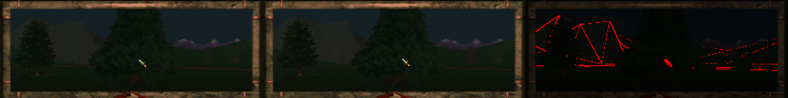
Six steps into "steve" at dusk: the original (left), the C version with the same jitter
(middle), and the differing pixels in red (right). Only some polygon edges are left.
Trees in the right places
Oct 13, 2026
The comparisons kept showing differences in the trees. With the new breakpoints I could ask the original
directly: stop wherever it draws a sprite and read every number it passes along (where on the screen,
how big, which fog table). Then compare them with ours. The far trees were within a pixel, but the near
ones were 15–25% too small, and two trees at the right edge were missing. Four things were behind it:
Size. The original projects an object's radius at its near side, r·512/(z−r), not
at its centre. It uses the same number to pick the level of detail.
Culling. An object is skipped only when the sphere's innermost corner is off screen. Ours
was stricter, which lost the two edge trees.
Integers. The scale factor, width, height and anchor are all 22.10 fixed point, and far
objects' coordinates are halved until they fit in 16 bits. Drawing columns step by 16.16 fixed point,
but rows keep only the top 8 bits of the fraction.
The sine table. Our trees were still a pixel low, by an amount that grew with distance.
That's a tilt: the camera's pitch of 280 units behaves like 272, because the original's sine table has
4096 steps per turn. (The horizon line still uses the exact angle.)
Now every sprite in the test scene matches the original's numbers exactly. Two last details
surfaced in the pixel comparison:
Row stepping. The tree interiors still had streaks every few rows. The scaler starts its row
fraction from the wrong byte: the high byte of the starting row, which is almost always 0, instead of
the fraction it just computed. We do the same now.
The horizon. The horizon line is truncated, not rounded. That moved the distant mountains up
one row.
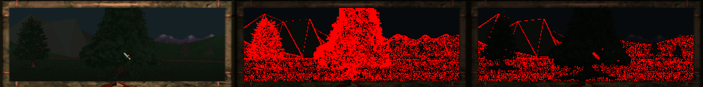
Left: the original, six steps into the "steve" save. Middle: pixels where the C version
differed this morning (red). Right: where it differs now (the total fell from 12,285 to 4,304; in
the freshly restored scene, from 5,698 to 727). The trees match completely. What's left: polygon
edges, where the original's integer scan conversion differs from our floating-point one, and the
patterned ground under the near hills.
Time passes
Oct 13, 2026
With lighting done, the clock had to move. Searching the code for the game time found many readers
but no obvious writer, and the decompiler couldn't make sense of the code around it. So I rebuilt
DOSBox-X with its heavy debugger, which adds memory breakpoints, and set one on the clock. One step
forward stopped the game inside a function in an overlay (502B:08E7) that adds a number of seconds to
the clock. A step costs 120 seconds at normal speed. That comes from the same small file as the step
length (MOVEMENT.DAT), and underground a step costs a quarter of that.
Besides moving the clock, that function checks whether the hour or the day has changed:
Every day each member eats one ration. Spoiled rations fill you but make you a little sick;
poisoned rations poison you and don't fill you. With nothing to eat, Starving goes up 5%. Near-death
wears off by 1–10% a day, faster when Healing.
Every hour each condition changes by its amount in the CONDITION table: sickness and poison
get worse, drunkenness and healing fade. Health changes too: down while sick, poisoned or starving,
up while healing.
After 17 hours without sleep, someone yawns and says the party needs rest. After 18 they
start losing health every hour.
Every 30 days each member's maximum health and stamina go up by one.
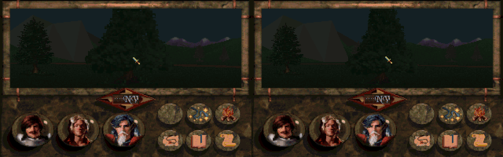
Both versions restored "steve" (19:12) and walked six steps. Original left, C right. Both
clocks moved 720 seconds, and both palettes are at light level 22 now (it was 29). Flat areas match
exactly. The rest of the difference is the tree-sprite speckle noted in the last post.
One trap with the new breakpoints: they're only checked when the machine is resumed from the
debugger. My usual way of pausing and resuming (freezing the machine) runs the plain CPU core, which
never checks them. That's now noted in the DOSBox notes for next time.
Nightfall
Oct 13, 2026
The restored "steve" game in the last post looked darker in the original, because the original shades the
world for the time of day. I dumped the original's palette in that scene and compared it with the zone's
palette file. The first 112 colours (the panel, portraits and text) were untouched. All 144 world colours
were about half as bright, but not exactly: 51 became 24 while 10 became 6. So it's a curve, not a plain
scale.
Searching for code that uses the zone's palette led to a small module of about 30 functions (segment
2CBC). It keeps the loaded palette and three working copies, and blends the world colours towards a
target colour in up to three passes: a teal haze, then a tint from a light source (a torch's warm yellow,
green underground, a blue spell light), then black for the night. Each pass moves a colour
(distance − 1) × strength / 64 of the way, using two lookup tables. The light
level is full from 8:00 to 17:00, 15 out of 64 from 20:00 to 4:00, and changes linearly at dawn and
dusk. The "steve" save is at 19:12, which gives level 29. Running the formula on the zone palette at
that level gives the original's palette byte for byte (all 768).
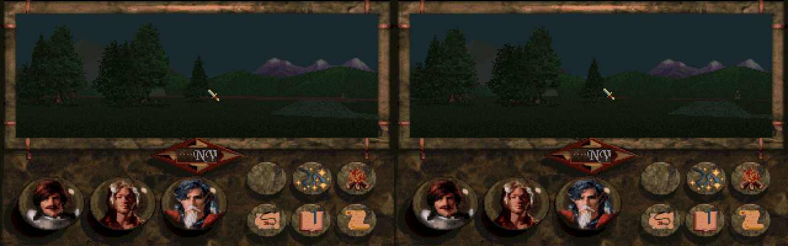
The same dusk scene, the original in DOSBox (left) and the C version (right). The palettes
are identical now. The speckled differences left in the trees come from how scaled sprites pick their
source pixels. That's a separate issue, still to track down.
The torch and spell tints are in the C code too, waiting for torches and light spells to switch them
on. Time doesn't pass yet in the C version, so for now a scene stays as dark as the moment it was
loaded.
Saving and restoring games
Oct 13, 2026
Restore Game and Save Game work now, with the original's screens: a list of save directories, a list
of games, scroll bars, and (when saving) text fields for the directory and the game's name. The saved
files use the original format: a 100-byte header with the save's name, then the whole working save.
Games saved in the original can be restored here, and the other way round. In the browser, saves are
kept in the browser's own storage (IndexedDB); the installation's saved games are listed too.
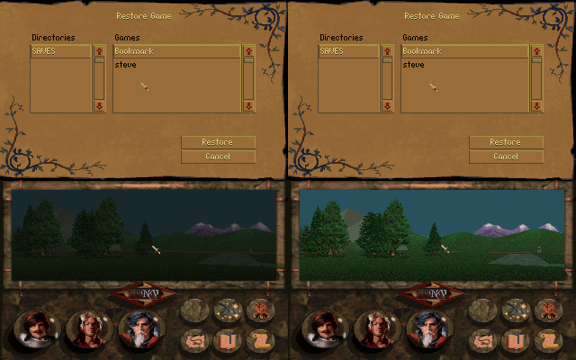
Top: the Restore screen in the original (left) and the C version (right), now 16 pixels
apart (the cursor). Bottom: the save "steve", made in the original, restored by each. The party stands
in the same place, looking the same way. The original is darker because it shades the world for the
time of day, which the C version doesn't do yet.
The screens came together in the usual way: build, compare with the original, fix. The list boxes,
scroll bars, labels and text fields are general pieces the original uses on several screens, so they
are separate reusable code now. The comparisons caught a few details: the scroll bar shows its marker
even with a single entry; icons are centred by halving each size separately; save slot 0 is always
listed as "Bookmark"; and text fields keep the parchment behind them instead of filling it.
Searching the body, and getting text exactly right
Oct 12, 2026
You can now click things in the 3D view. The original keeps a list of the last ten clickable things it
drew, each with a box on the screen. Whether something counts depends on its type and how close it is
(a table in DETECT.DAT). A click goes to the most recent box under the pointer, then to a handler for
that type. The first handler is bodies. Left-click the assassin on the road and the party searches
him: a short text, then the inventory opens on what he carried, ready to drag onto your characters.
Whatever you take stays taken, because the container is written back into the saved game.
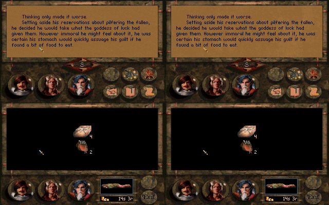
Clicking the body by the road. Left: the original. Right: the C version. The inventory
screens match apart from the mouse cursor; the text box's parchment texture is placed randomly in both.
Pixel comparisons kept turning up the same small problem: a line of text breaking one word earlier or
later than in the original. Reading the original's layout code explained it. When the character that
doesn't fit is itself a space, the word before it stays on the line. Two more details came out too:
text is centred vertically without subtracting the last line's spacing, and boxes at x=13 get no frame.
Every text compared since then matches the original line for line.
The same session fixed an older bug in the chapter-opening scenes. The forest was missing behind the
characters, because the parchment backdrop was drawn over the picture instead of around it. Speakers'
name tabs were also 10 pixels too high.
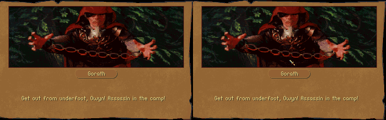
"Get out from underfoot, Owyn!": the original (left) and the C version (right), now
within 27 pixels of each other (the cursor).
The character sheet, pixel for pixel
Oct 12, 2026
Right-clicking a portrait now opens the character sheet: the character's portrait and name, health,
stamina, speed and strength, any conditions, and the twelve skills as sword-shaped bars. Clicking a skill
marks it for training with a red gem, which affects how quickly it improves.
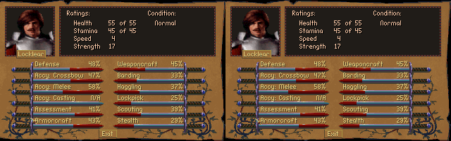
Left: the original. Right: the C version. Apart from the mouse cursor, the two are
identical down to the pixel.
Getting there took two rounds of comparing. The first C version showed a black screen with a garbled
portrait: I had the palette merge backwards. The portrait's palette only fills colours 16-111, the range
its pictures use, and the screen keeps its own colours elsewhere. After that fix, the pixel diff
showed one remaining difference: every skill percentage was one pixel too high. That was a misread
register in the original's code. One more fix, and the diff came back empty except for the cursor.
Right-click for the details
Oct 12, 2026
Right-clicking an item now shows what the original shows. The item glides aside, with its name, its
condition or charges and its state ("Using, Repairable"), and its description appears beside it.
Weapons, armour, quarrels and magic items get a More Info button that opens a table:
base damage and accuracy for thrusts and swings, armour protection, magic on the item, the race it was
made for.
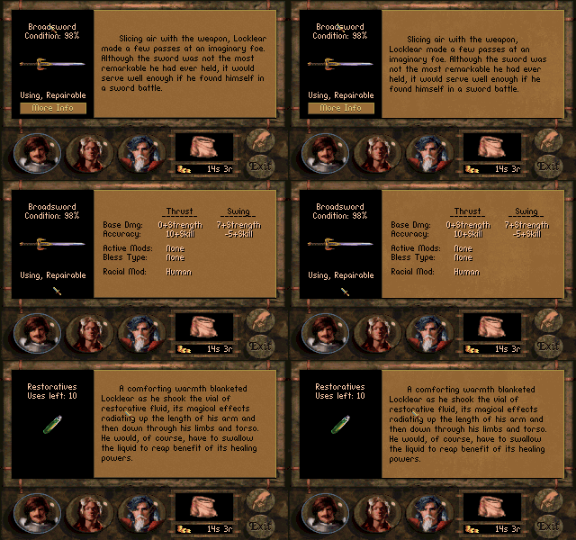
Left: the original. Right: the C version, from the same scripted clicks. The broadsword's
description, its More Info page, and the restorative potion.
One bug turned up on the way. The conversation code restored the screen after every text, which is
right for texts you click away but wiped out descriptions that are meant to stay up while you decide
whether to press More Info. One known difference remains: a line containing a character's name sometimes
wraps one word differently from the original.
The inventory, item by item against the original
Oct 12, 2026
The inventory screen used to be a picture: you could look at your items but not touch them.
Now it works like the original. Click an item to select it, double-click to use it, or drag it:
onto another portrait to give it away, onto the equipment slots to equip it, or onto another item
to use one on the other (a whetstone on a sword, poison on quarrels). Stacks ask how many to give,
with a Share with party option. Keys go onto the party's key ring, and coins go straight into the
purse. Behind it are the original's rules for room (20 cells for a character), for sorting, and
for merging stacks. Using an item covers equipping, repairs, oils and poisons, herbs, potions with
timed boosts, and healing potions with their "Use again?" question.
This was the first feature built with the DOSBox remote control from the start. Each step was done
in the original first, screenshots taken mid-drag, then the same steps were scripted in the C version
and the frames compared pixel by pixel. The first comparison caught three of my mistakes. The money
wasn't right-aligned. The ring around the current portrait was one pixel off. And while you drag, the
box shows a sack (the ground), not the item: I had misread that from an earlier screenshot.
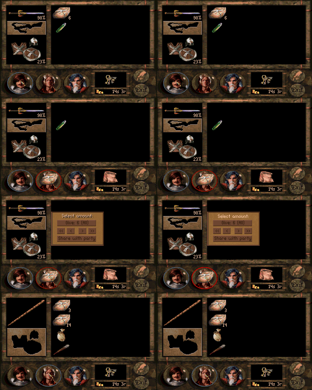
Left: the original in DOSBox. Right: the C version, driven by the same script. From the top:
Locklear's inventory; dragging the rations onto Owyn (red ring); the amount prompt; Owyn's inventory
afterwards, with the rations split into stacks of 3 and 14 just like the original. The top and bottom pairs
now differ by fewer than 40 pixels, most of them the mouse cursor.
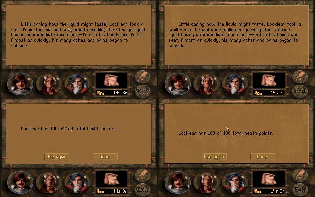
Drinking the healing potion: original (left) and C (right). The text still wraps one word
differently on its first line; that's on the to-do list.
A small tool came out of this too: the test harness can now lay out every image in one of the game's
image files with its index (--bmx INVMISC.BMX,INVENTOR.PAL). That made it easy to see which
picture the box shows for what: a sack for the ground, a chest, a grave, a body, a shop sign, the key ring.
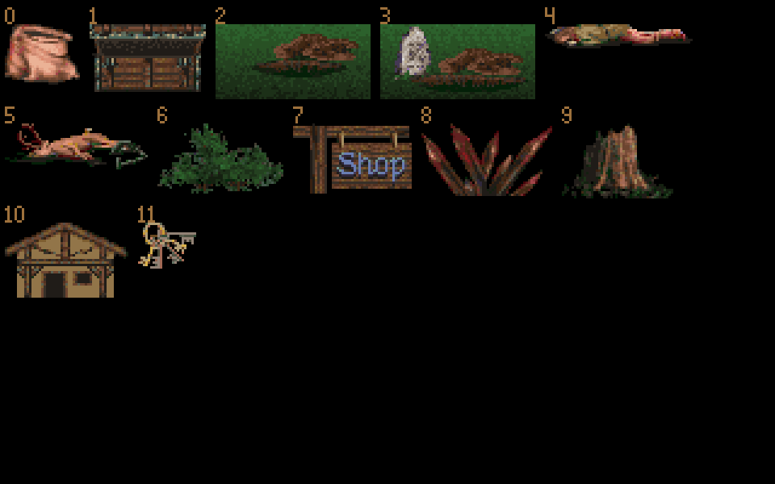
INVMISC.BMX, rendered by the harness.
Still to do on this screen: item information (right-click), the character sheet, dropping things on the
ground, shops, and a few special items (maps, light sources, and others).
A ready-to-test list, and this journal
Oct 12, 2026 · 9a93308
The game page (localhost:8320) now has a collapsible Ready to test
list of everything that works in the browser, plus what isn't done yet. A new URL option jumps straight
into a fight: ?combat=1,14, or ?combat=1,14,1
to watch the party fight by itself.
This journal is new too. From now on, each noteworthy step gets a post here; the earlier posts were
written afterwards from the commit history and the screenshots taken along the way.
The original game, driven end to end
Oct 12, 2026, 22:36 · 286423e
The test was simple: boot the original game, get through the menus and opening scenes, walk a few
steps and move the mouse cursor in a circle, all by script, recorded as video. The first attempts
failed (see the next post down). This is the run that worked:
The original KRONDOR.EXE in DOSBox-X, driven entirely by script. 84 seconds at the game's own
speed: frames are captured every 1/15 s of emulated time.
Every step checks its own result before moving on. The script recognises the main menu by its column
of buttons and the play screen by the portrait panel, waits for fades to finish before pressing anything,
and verifies that each step forward actually moved the view. On its first runs it stopped itself three
times, each on a real quirk of the game:
During the intro the game doesn't track the mouse at all, so a click there can't be aimed or checked.
The intro ignores input for its first few seconds; a timed click let it roll on into the credits. Now
the script presses Space until the menu appears (it took 8 presses).
The cursor stopped 4 pixels short of a button and needed more correction steps.
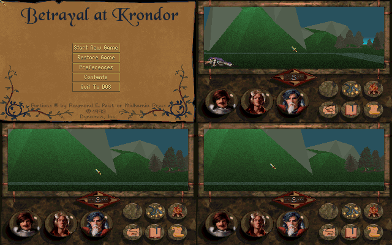
Frames from the run: the main menu, the start of play with the body on the road, the view after
four steps, and the cursor partway round its circle.
Taking full control of DOSBox, and what went wrong
Oct 12, 2026, 22:01–22:36 · 372d5e1286423e
To reverse engineer the game accurately it helps to drive the original like a puppet: pause it,
inspect memory, press keys, click, and step time forward exactly. DOSBox-X is open source, so it got a
patched control channel. A script can now:
set breakpoints and get told when one is hit, read registers, and read or write memory;
press keys and click, and put the mouse exactly where it should be. The game only reads relative
mouse motion, so the script nudges the mouse until the game's own cursor variable says it has arrived;
run exactly N milliseconds of game time and then freeze, at up to about 8× real speed;
save and load emulator states, and take screenshots.
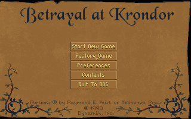
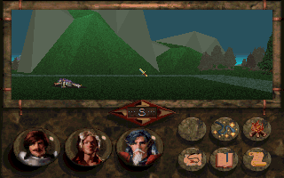
Left: the script moved the original's cursor onto "Restore Game". Right: the original at the
start of play, reached by script.
It took several tries to get right, and the mistakes were worth writing down:
Scripts must check their own results. The first recording sent inputs on
fixed timers and never looked at the screen. When one skip didn't take, it spent 40 seconds "walking" at a
frozen dialog. Every step now checks it worked, and stops with a screenshot if not.
Pausing through the debugger corrupted the emulator. Now and then the
emulated CPU ended up running garbage. Pausing now freezes the emulator directly: 400 pause/run cycles, no
errors, and each cycle got 14× faster.
Save states break the game's file access. After loading one, the game
can't create its save file at the chapter map ("An important data file could not be created!"). Anything
that touches files starts from a fresh boot.
The emulator can pop up windows on the desktop. A "Quit DOSBox-X
warning" appeared on the user's screen and froze the emulator waiting for a click. All dialogs are now
suppressed.
The full list, with fixes, is in docs/dosbox-agent.md, and a new CLAUDE.md
points every future session to it.
Burning ground, mirror walls, and the dead that rise
Oct 12, 2026, 18:06–18:19 · 5127252be20332ced7582594b562
Some spells change the battlefield itself. Each cell of the combat grid now has a terrain type and a
timer:
Wrath of Killian sets a cell on fire and damages whoever stands in it each round.
Mirrorwall blocks missiles and reflects spells back at the caster.
Gambit of the Eight leaves a trap that fires when someone steps on it.
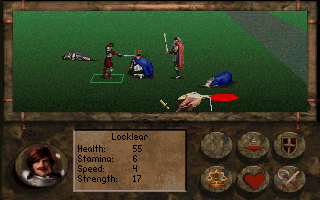
The red square is a Gambit trap. This is a headless test fight: the party fights by itself,
and its caster knows only this one spell.
Black Slayers don't stay down: a fallen one gets back up a few rounds later unless someone casts
Final Rest on the body. The monster AI knows this too, and lays its own enemies to
rest. Also new: skill modifiers (Despair and Strength Drain weaken the party for the fight), summoned
creatures that fight on the party's side, and Dannon's Delusions, an illusion that vanishes when its
time runs out.
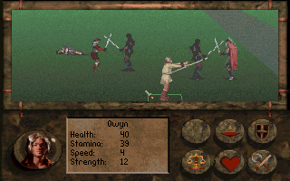
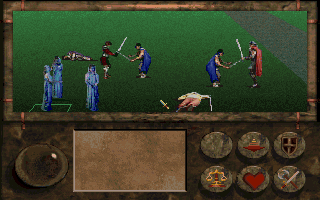
Left: a fight against Black Slayers, under a darkening spell. Right: summoned creatures (in blue)
on the party's side.
Monsters with tricks, and a palette bug
Oct 12, 2026, 17:55 · 3bee569
Many monsters have moves of their own beyond hitting and casting: wyverns breathe, some creatures blink
across the battlefield, others call down lightning. The original keeps a table of special routines by
monster type; each one is now C code.
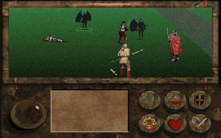
A test fight with every monster forced to one special type (a harness option meant for exactly
this).
Testing turned up a bug: after Despair or Mind Melt, the battlefield turned into coloured static. The
code that tints the screen handed the palette routine a partial colour table where it expected the whole
thing.
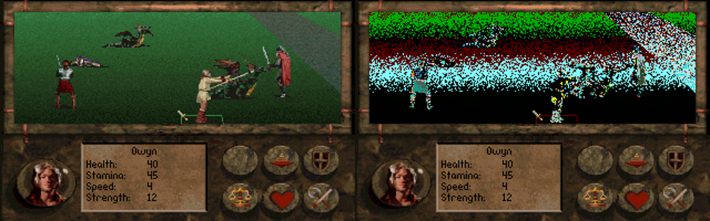
The same moment: as it should look (left), and with the bug (right).
The spell book and casting in combat
Oct 12, 2026, 13:28–13:54 · a556386ad58c9f
The spell data (names, costs, descriptions, which spells a character knows) now loads from the game's
files, and the spell book screen works: pick a symbol, see the spell's description, choose its power.
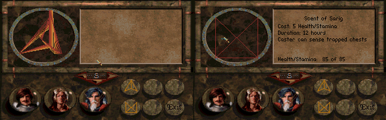
The spell book: the original on one side and the C version on the other, at slightly different
moments.
In combat, spells can now be cast: their effects, the sparkle animations, and the computer's casters,
who choose what to cast and at whom.
Combat
Oct 12, 2026, 08:21–08:41 · 3fd44dcad76139d4c025585803d7
The biggest piece so far: the tactical battle. Fighters stand on a grid, move, swing or thrust, defend
or rest. Damage numbers and misses float over their heads. The computer's fighters pick targets,
keep their distance with crossbows, lose heart and flee. Away from combat, monsters now wait in the world
where they belong, and the fallen stay where they fell.
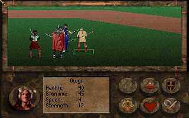
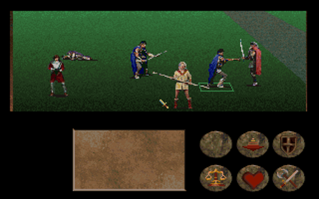
Left: the original's battlefield, captured in DOSBox. Right: the C version mid-fight.
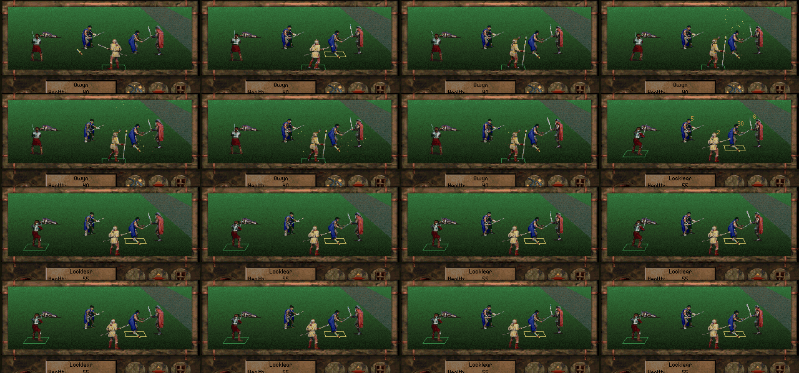
Frames from an automated test fight in the C version: casting sparks, damage numbers, and turns
passing from one fighter to the next.
Sprites, and the body on the road
Oct 12, 2026, 00:43–07:38 · ded66eadf38ecf92aaedf
Combat figures are stored in two compressed image formats that weren't decoded yet; now they are. Two
bugs got fixed along the way. A new game was playing a later chapter's ending sequence instead of only
the opening. And one byte that sets a sprite's size was being read as signed, which hid the body on the
road at the start of the game and drew trees at the wrong size.
The original's first view of the game: the assassin's body lies on the road.
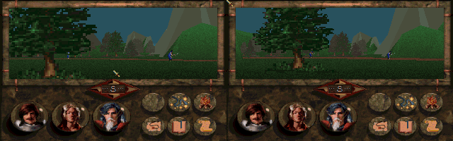
A tree and figures standing in the world, in the original and the C version.
Inventory and characters
Oct 11, 2026, 23:48–23:52 · 3413c7608e4d0d
Item data, containers, and the inventory screen: click a portrait to see that character's items and
switch between party members. Behind it, characters' skills now work as in the original: item bonuses,
health scaling (a wounded fighter fights worse), limits, and learning from use.
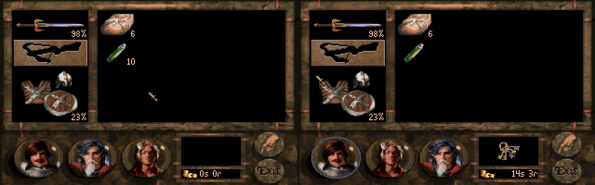
An early comparison from that night: the items match, but the party order and the money panel
still differed. The party order was fixed in the same commit.
Events and conversations
Oct 11, 2026, 21:08–23:16 · f3d2f8cf990184
The world reacts now. Reaching certain spots triggers events (narration, blocked paths, zone changes),
some only once, some on every visit. The game tracks thousands of story flags. The conversation engine
handles branching on flags, choices, yes/no answers and chance; keyword buttons; and actions such as
money, party changes and sounds.
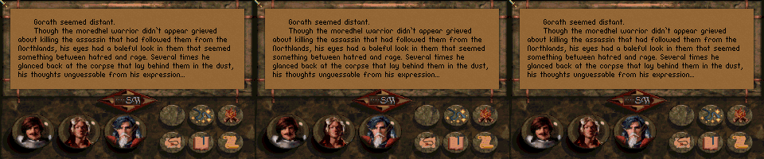
Walking up the road triggers the narration "Gorath seemed distant…".
Walking around
Oct 11, 2026, 20:36–20:41 · 79ce395c2a62146fe8a77
The main game screen came together: the frame, portraits, compass and buttons. You can move and turn,
you collide with the ground and slide along obstacles, and starting a new game reaches play. Walking was
compared step by step with the original: the positions match exactly, down to the game's fixed-point
arithmetic.
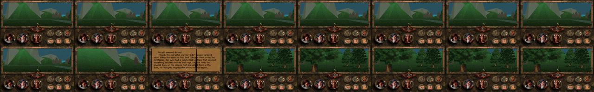
Sixteen frames of a scripted walk in the C version, including the event text on the way.
A software 3D renderer that matches the original
Oct 11, 2026, 20:29–20:32 · daa913fe02f3c2
The first-person view is drawn by C code reconstructed from the original's own renderer: zones loaded
from the game files, polygons and sprites drawn in software into a 320×200 image. No WebGL. One detail
had to be checked against the original: the heading increases counter-clockwise.
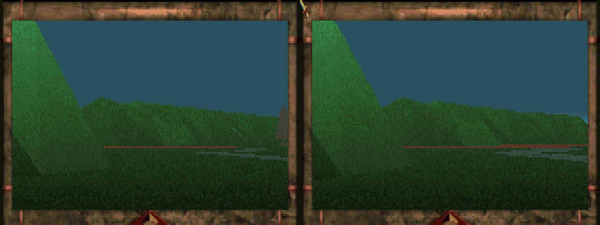
The starting view, rendered by the original and by the C version.
Dialogs and the chapter book
Oct 11, 2026, 18:19–18:26 · 059f2fee4db8c0
Text is everywhere in this game. The dialog system now does text boxes, the speaker's name tab, word
wrap, and the pauses the game gives you to read. Each chapter opens with pages from a book, typeset on a
640×350 screen with an illuminated first letter. The C version lays them out the same way.
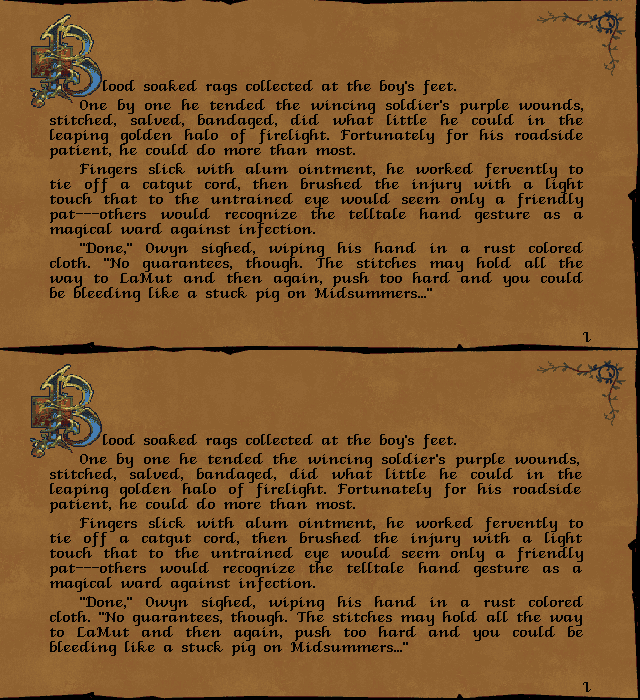
The first page of Chapter I, from the original and from the C version.
A remote control for the original game
Oct 11, 2026, 15:50 · 26934aa
To check our work against the real thing, the original game runs in DOSBox-X inside WSL, with no window.
A small patch adds a control channel: dump the screen, press keys, send mouse events, and use the built-in
debugger. This is what produced the "original" half of every comparison image in this journal.
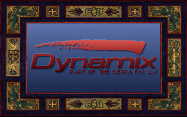
One of the first frames captured from the original running headless.
The intro, played by C code
Oct 11, 2026, 14:32 · 6d102fd
The game's movies are little programs: TTM scripts draw and animate, and ADS scripts sequence them. With
both interpreters in C, the intro plays from the reconstruction instead of the JavaScript prototype.
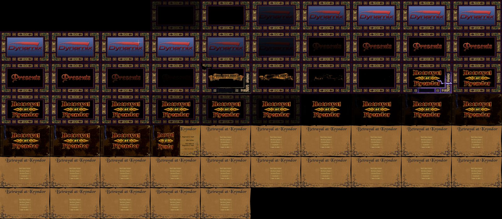
The intro as rendered by the C version.
The C reconstruction begins: the main menu
Oct 11, 2026, 14:08–14:14 · d325badbd10d90
The real work: rewriting the game's code as readable C. The C code talks to the outside world through a
small platform interface (frames, input, files, sound, time), so the same code runs in a browser Web
Worker as WebAssembly and in a Node test harness. It's compiled with zig. The first screen was the main
menu, with the game's button system, fonts, input and sound.
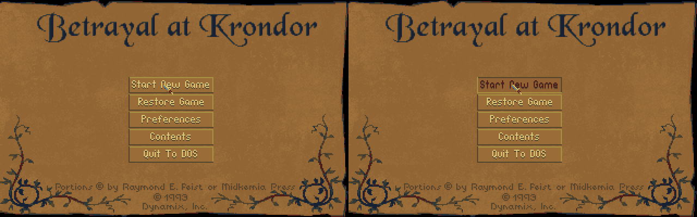
The main menu, from the original and from the C version.
Making the executable readable
Oct 11, 2026, 13:58 · a8ac7ab
KRONDOR.EXE is too big for DOS memory, so most of its code lives in overlays, chunks loaded on
demand. That confuses disassemblers. tools/deoverlay.py rebuilds a single flat executable,
resolving how each overlay refers to the others, so Ghidra can analyse the whole program. Each C function
in the reconstruction cites the address of the original routine it comes from.
A first look at the world in 3D
Oct 11, 2026, 13:50–13:52 · 851cb1d4122c73
A quick experiment: decode the zone models and terrain tiles and fly around them with three.js, with
trees, signs and tombstones as billboards. It's a side tool, not the game's renderer (that came later, in
C), but it proved the world data decodes correctly.
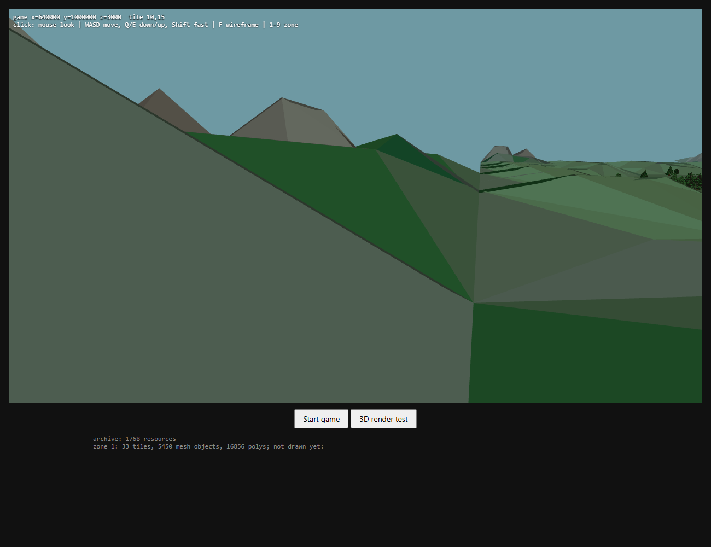
Zone 1 in the three.js test view.
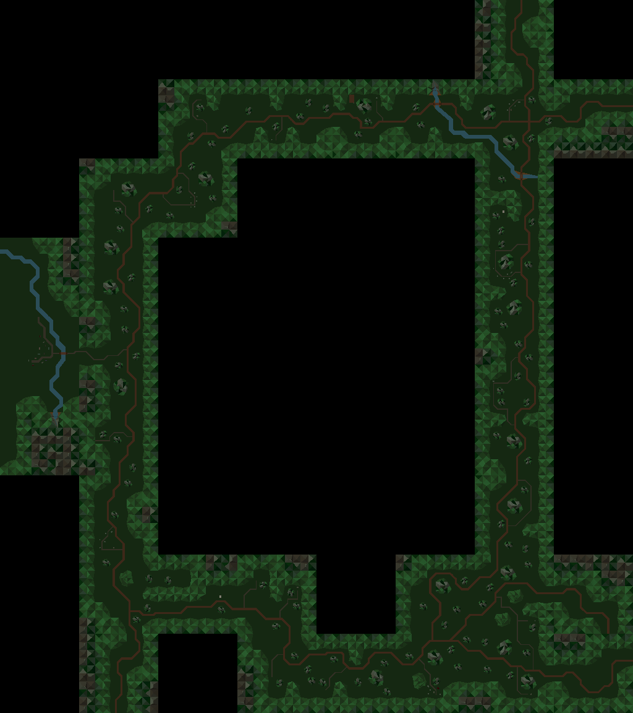
Zone 1 from above: forest, roads in red, a river.
Day one: reading the game's files
Oct 11, 2026, 13:37–13:41 · c7551d2995e75e
Before any code could be rebuilt, the data had to be readable: the resource archive, its compression
schemes, images and palettes, and the movie format. A JavaScript prototype decodes them and plays the
intro, with CD-audio music, Sound Blaster effects and an approximate FM synthesiser.
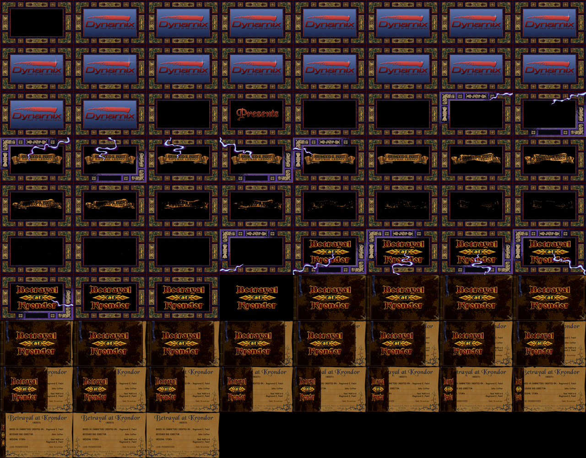
The intro, played by the first JavaScript prototype straight from the game's files.